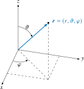
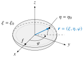
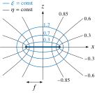
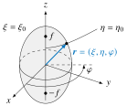
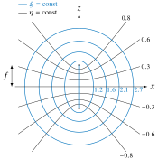

Coordinate System
At the user interface a Cartesian basis is used for all coordinates and field components. Internally, spherical, oblate spheroidal, and prolate spheroidal coordinates are used as well.
Spherical Coordinates
The employed coordinate system uses the following convention for the spherical coordinates everywhere in the code with $\vartheta \in [0, \pi]$ and $\varphi \in [-\pi, \pi]$.

Oblate Spheroidal Coordinates
The oblate spheroidal coordinates $(\xi, \eta, \varphi)$ with $\xi \ge 0$, $\eta \in [-1, 1]$ and $\varphi \in [-\pi, \pi]$ are defined by
\[x = f \sqrt{(1 + \xi^2)(1 - \eta^2)} \cos \varphi \,, \qquad y = f \sqrt{(1 + \xi^2)(1 - \eta^2)} \sin \varphi \,, \qquad z = f \xi \eta\]
where $f$ denotes the semifocal distance, so that the distance from the origin is $r = f \sqrt{\xi^2 + 1 - \eta^2}$.
The surface $\xi = \xi_0$ is an oblate spheroid with equatorial radius $f \sqrt{1 + \xi_0^2}$ and polar radius $f \xi_0$; the surfaces $\eta = \mathrm{const}$ are the confocal one-sheeted hyperboloids. The coordinate $\eta$ thus plays the role of $\cos \vartheta$ and reduces to it in the limit of large $\xi$, whereas $\varphi$ is the azimuth of the spherical coordinates.

The figure shows the spheroid $\xi = \xi_0$ together with the focal ring of radius $f$ in the plane $z = 0$ (dotted). In the meridian plane of a point, the coordinate line $\eta = \eta_0$ is a branch of the confocal hyperbola, which starts on the focal disc and crosses the spheroid at a right angle.

In the $xz$-plane, the coordinate lines are confocal ellipses ($\xi = \mathrm{const}$) and hyperbolas ($\eta = \mathrm{const}$), shown above for $f = 1$. The ellipse $\xi = 0$ degenerates into the focal disc $|x| \le f$ (thick line), the hyperbolas $\eta = \pm 1$ into the $z$-axis, and $\eta = 0$ into the plane $z = 0$ outside the disc.
Two degenerate cases are of interest. For $\xi_0 \rightarrow \infty$ the spheroid approaches a sphere, with $f \rightarrow 0$ such that $f \xi_0$ stays finite, and the coordinates degenerate. For $\xi_0 = 0$ the surface collapses onto the disc of radius $f$ in the plane $z = 0$, its two faces being distinguished by the sign of $\eta$: inside the disc, the sign of $\eta$ cannot be recovered from the Cartesian coordinates of a point.
The metric coefficients read
\[h_\xi = f \sqrt{\cfrac{\xi^2 + \eta^2}{1 + \xi^2}} \,, \qquad h_\eta = f \sqrt{\cfrac{\xi^2 + \eta^2}{1 - \eta^2}} \,, \qquad h_\varphi = f \sqrt{(1 + \xi^2)(1 - \eta^2)} \,.\]
Since $\hat{\bm e}_\xi = h_\xi^{-1} \partial \bm r / \partial \xi$ is the outward normal of the surface $\xi = \mathrm{const}$, the normal derivative is $\partial / \partial n = h_\xi^{-1} \partial / \partial \xi$.
The basis degenerates at the rim of a disc, where $\xi = 0$ and $\eta = 0$, and on the axis, where $|\eta| = 1$. These are the edge and the poles of the scatterer; see the accuracy of the spheroidal solution for what follows from it.
The outward normal $\hat{\bm e}_\xi$ is not parallel to the position vector unless the scatterer is a sphere. For a disc it is $\pm \hat{\bm e}_z$ everywhere.
These coordinates are employed for the oblate acoustic spheroid and the disc. The conversions are available as SphericalScattering.obl2cart, SphericalScattering.cart2obl, SphericalScattering.oblateMetric and SphericalScattering.oblateBasis.
Prolate Spheroidal Coordinates
The prolate spheroidal coordinates $(\xi, \eta, \varphi)$ with $\xi \ge 1$, $\eta \in [-1, 1]$ and $\varphi \in [-\pi, \pi]$ are defined by
\[x = f \sqrt{(\xi^2 - 1)(1 - \eta^2)} \cos \varphi \,, \qquad y = f \sqrt{(\xi^2 - 1)(1 - \eta^2)} \sin \varphi \,, \qquad z = f \xi \eta\]
where $f$ denotes the semifocal distance, so that the distance from the origin is $r = f \sqrt{\xi^2 - 1 + \eta^2}$.
The surface $\xi = \xi_0$ is a prolate spheroid with equatorial radius $f \sqrt{\xi_0^2 - 1}$ and polar radius $f \xi_0$, the latter being the larger one; the surfaces $\eta = \mathrm{const}$ are the confocal two-sheeted hyperboloids. As for the oblate coordinates, $\eta$ reduces to $\cos \vartheta$ in the limit of large $\xi$.

The figure shows the spheroid $\xi = \xi_0$ together with its foci $z = \pm f$ on the axis. In the meridian plane of a point, the coordinate line $\eta = \eta_0$ is a branch of the confocal hyperbola, which starts on the axis between the foci and crosses the spheroid at a right angle.

In the $xz$-plane, the coordinate lines are confocal ellipses ($\xi = \mathrm{const}$) and hyperbolas ($\eta = \mathrm{const}$), shown above for $f = 1$. The ellipse $\xi = 1$ degenerates into the segment $|z| \le f$ between the foci (thick line), the hyperbolas $\eta = \pm 1$ into the parts $|z| \ge f$ of the $z$-axis, and $\eta = 0$ into the plane $z = 0$.
The two degenerate cases mirror those of the oblate coordinates. For $\xi_0 \rightarrow \infty$ the spheroid approaches a sphere, with $f \rightarrow 0$ such that $f \xi_0$ stays finite. For $\xi_0 = 1$ the surface collapses onto the segment of the axis between the foci, $|z| \le f$, which is not supported as a scatterer.
The metric coefficients read
\[h_\xi = f \sqrt{\cfrac{\xi^2 - \eta^2}{\xi^2 - 1}} \,, \qquad h_\eta = f \sqrt{\cfrac{\xi^2 - \eta^2}{1 - \eta^2}} \,, \qquad h_\varphi = f \sqrt{(\xi^2 - 1)(1 - \eta^2)} \,,\]
the outward normal of the surface $\xi = \mathrm{const}$ again being $\hat{\bm e}_\xi = h_\xi^{-1} \partial \bm r / \partial \xi$.
The basis degenerates on the axis, $|\eta| = 1$, that is, at the tips of the spheroid, where $\hat{\bm e}_\eta$ and $\hat{\bm e}_\varphi$ are not determined; see the accuracy of the spheroidal solution for how the traces are evaluated there.
In the conversions, the differences $\xi^2 - 1$, $1 - \eta^2$ and $\xi^2 - \eta^2$ are formed as products, e.g., $(\xi - 1)(\xi + 1)$, which do not cancel close to the axis or the foci. The inverse transform takes $\eta^2$ from whichever of two relations does not cancel at the given point, so that a point on the axis yields $\eta = \pm 1$ exactly.
These coordinates are employed for the prolate acoustic spheroid. The conversions are available as SphericalScattering.prol2cart, SphericalScattering.cart2prol, SphericalScattering.prolateMetric and SphericalScattering.prolateBasis.